3.5 Método das Secantes
O método das secantes é uma variação do método de Newton. Dada uma
função 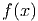, a ideia é aproximar sua derivada pela razão fundamental:
Mais precisamente, o método de Newton é uma iteração de ponto fixo da
forma:
onde 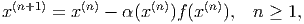 é uma aproximação inicial dada e 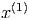. Usando a
aproximação da derivada acima, com 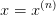 e 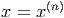, temos:
Isto nos motiva a introduzir a iteração do método das secantes dada
por:
Observe que para inicializarmos a iteração acima precisamos de duas
aproximações iniciais, a saber, 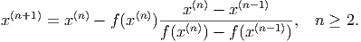 e 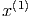. Maneiras apropriadas de escolher
estas aproximações podem ser inferidas da interpretação geométrica do
método.
Exemplo 3.5.1. Encontre as raízes de 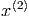.
Solução. Da inspeção do gráfico das funções 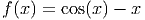 e 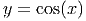, sabemos
que esta equação possui uma raiz em torno de 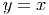. Iniciamos o método com
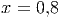 e 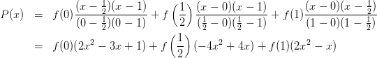.
|
|
|
|
| 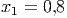 | 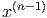 | 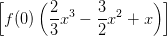 | 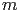 |
|
|
|
|
| | | 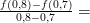 | 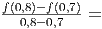 |
| 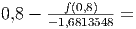 | 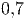 | 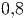 | 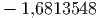 |
|
|
|
|
| 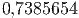 | 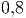 |  | 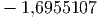 |
|
|
|
|
| 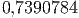 | 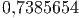 | 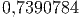 | 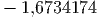 |
|
|
|
|
| 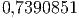 | 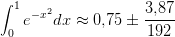 | 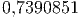 | 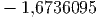 |
|
|
|
|
| |
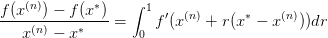
3.5.1 Interpretação geométrica
Enquanto, o método de Newton está relacionado às retas tangentes ao gráfico da
função objetivo 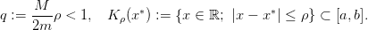, o método das secantes, como o próprio nome indica, está
relacionado às retas secantes.
Sejam 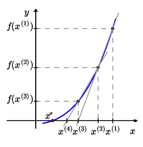 e as aproximações 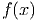 e 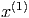 do zero 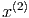 desta função (veja
Figura 3.6). A iteração do método das secantes fornece:
De fato, 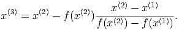 é o ponto de interseção da reta secante ao gráfico de 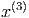 pelos
pontos 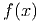 e  com o eixo das abscissas. Com efeito, a equação desta reta
secante é:
com o eixo das abscissas. Com efeito, a equação desta reta
secante é:
Esta reta intercepta o eixo das abscissas no ponto 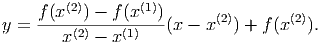 tal que ,
i.e.:
3.5.2 Análise de convergência
Uma análise assintótica semelhante aquela feita para o método de Newton nos
indica que, para uma função duas vezes diferenciável, as iterações do
método da secante satisfazem:
para aproximações iniciais suficientemente próximas de , onde .
Além disso, veremos que:
sob certas condições. Ou seja, o método das secantes tem taxa de convergência
superlinear.
Teorema 3.5.1 (Método das secantes). Seja uma função com
tal que . Sejam, também:
Além disso, seja tal que:
Então, para aproximações iniciais , com , temos
que as iterações do método das secantes , , e ,
quando . Além disso, vale a seguinte estimativa de convergência a
priori:
onde é a sequência de
Fibonacci ,
bem como vale a estimativa a posteriori:
Demonstração. Sejam , , e , tal que
,  e . Seja, também:
e . Seja, também:
Com isso, temos:
Então, da cota assumida para primeira derivada de e do Teorema do valor
médio, temos:
 | (3.5) |
Agora, iremos estimar este último termo a direita. Para tanto, começamos
observando que da expansão em polinômio de Taylor de ordem da função
com resto na forma integral, temos:
De forma análogo, temos:
Logo, temos:
![f-(x(n))-−-f(x(n−1)) f(x(n)) −-f-(x∗)
x(n) − x(n−1) − x(n) − x ∗ =
∫ 1[ ]
f′(x (n) + r(x(n−1) − x (n))) − f ′(x(n) + r(x ∗ − x (n))) dr.
0](main1724x.png) | (3.6) |
Agora, novamente temos:
Então, retornando à Equação (3.6) e usando a assumida cota para a segunda
derivada, obtemos:
Agora, retornando à Equação (3.5), obtemos:
Portanto, concluímos que as iterações do método da secantes  permanecem
no conjunto , se começarem nele. Além disso, temos demonstrado
que:
permanecem
no conjunto , se começarem nele. Além disso, temos demonstrado
que:
Com isso, temos:
Como e , temos , . Isto mostra a estimativa de
convergência a priori:
Além disso, como quando e , temos que as iterações do
método das secantes quando .
Por fim, mostramos a estimativa de convergência a posteriori. Para tanto, da
cota assumida para a primeira derivada e do Teorema do valor médio, temos, para
:
Agora, da iteração do método das secantes:
temos:
Logo:
Observamos que o último termo pode ser estimado como feito acima para
o termo análogo na Inequação (3.5). Com isso, obtemos a estimativa
desejada:
__
Proposição 3.5.1 (Sequência de Fibonacci). A sequência de Fibonacci
é assintótica a e:
onde é a porção áurea.
Demonstração. A sequência de Fibonacci é definida por e
, . Logo, satisfaz a seguinte equação de diferenças:
Tomando , temos:
Portanto,  . Como , as constantes satisfazem:
. Como , as constantes satisfazem:
Ou seja, obtemos a seguinte forma explícita para os números de Fibonacci:
Daí, segue imediatamente o enunciado. __
Observação 3.5.1. Sob as hipóteses do Teorema 3.5.1 e da Proposição 3.5.1,
temos:
Isto mostra que o método das secantes (nestas hipóteses) tem taxa de
convergência superlinear ().